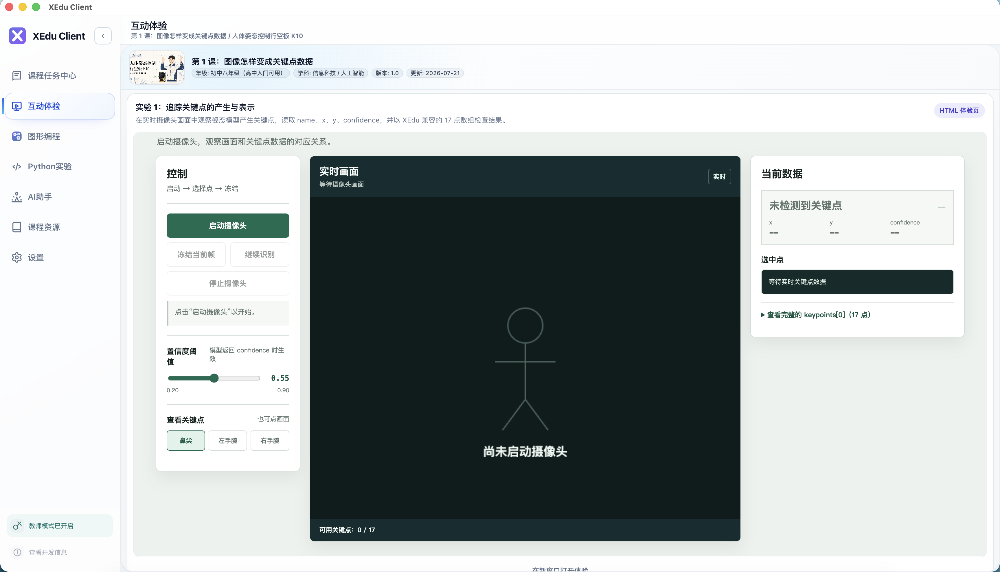
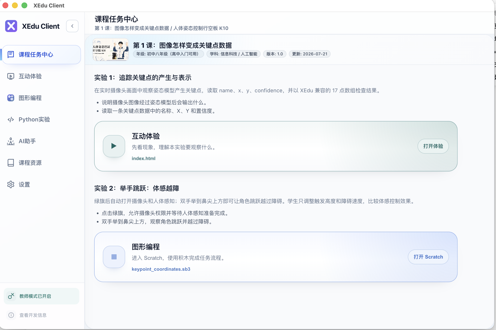
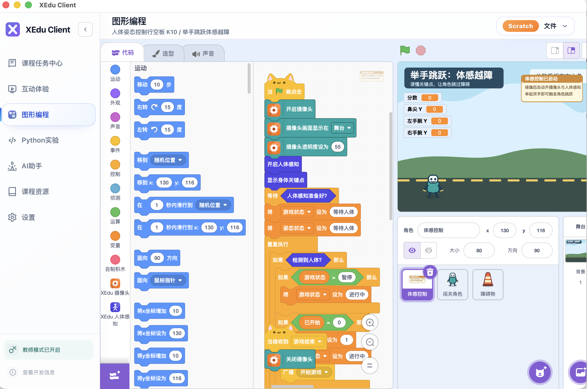
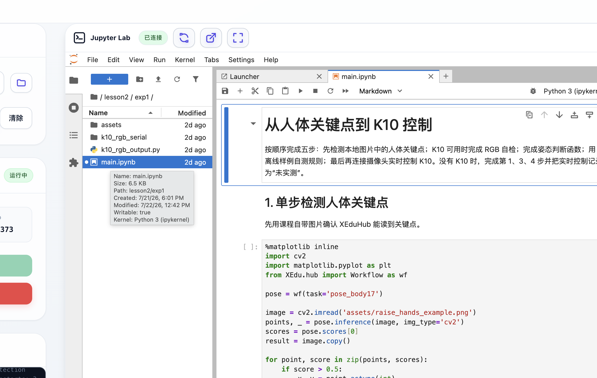

互动体验
教师可先用实时画面和关键点数据演示实验对象，再引导学生理解摄像头、人体关键点与 AI 模型结果的对应关系。
面向 AI 教学场景的桌面实验工作台
面向学校机房和课堂实验场景，把课程任务、互动体验、Scratch 图形编程与 Python/Jupyter 环境集中到同一桌面客户端，降低教师发课和学生进入实验的门槛。


教师可先用实时画面和关键点数据演示实验对象，再引导学生理解摄像头、人体关键点与 AI 模型结果的对应关系。

学生直接在图形化工作区拼接积木，把人体感知、摄像头和课堂任务串成可运行作品，适合中学入门和项目展示。

进入 Jupyter Lab 后可直接阅读课程 Notebook、运行 Python 代码和调试实验步骤，适合教师备课与进阶实验教学。
这里展示的是面向学校真实使用场景的桌面客户端。它不是一个单独部署在 GitHub Pages 上的网页应用， 而是承接本地课程资源、互动实验、Scratch 与 Jupyter 环境的工作台。官网负责说明真实界面、引导下载体验版、查看源码与教师安装文档。